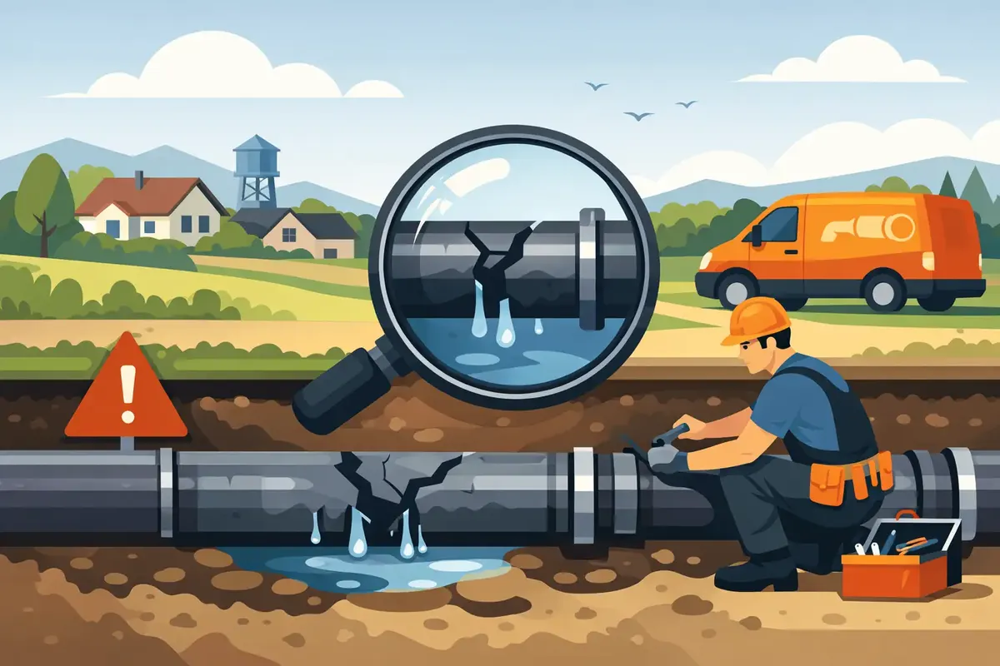

A sewer problem rarely starts with a dramatic backup. More often, it begins with a toilet that gurgles when the washer drains, a stubborn tub clog, or a patch of grass that stays unusually green. When you need sewer pipe repair Woodbury TN property owners can depend on, paying attention to those early warnings can protect your home, business, and budget from a much larger mess.
Your sewer line carries wastewater away from the property every day. When it is cracked, blocked, shifted, or invaded by roots, the plumbing inside the building cannot drain the way it should. A qualified plumber can identify the cause before recommending a repair, so you are not left guessing or paying for work that does not solve the real problem.
Signs You May Need Sewer Pipe Repair in Woodbury TN
A single slow drain can be a local fixture or branch-line issue. Several drains acting up at once is different. If water rises in a shower when you flush a toilet, or the lowest drain in the building backs up first, the main sewer line deserves attention.
Watch for these common signs:
- Frequent clogs in more than one sink, toilet, shower, or tub
- Gurgling sounds from toilets or drains when water is used elsewhere
- Sewage odors in the yard, crawl space, bathroom, or near floor drains
- Wet spots, soft soil, or unusually lush areas above the sewer path
- Wastewater backing up through a tub, shower, or floor drain
Do not assume repeated plunging or chemical drain cleaner will fix a main-line problem. Harsh chemicals can damage certain pipes and fixtures, and they often do little against root intrusion, a collapsed section, or a severe obstruction farther down the line. If sewage is coming back into the home or commercial building, stop using water when possible and call for emergency plumbing help.
What Causes Sewer Lines to Fail?
Sewer pipe trouble has more than one cause, which is why a proper inspection matters. Older homes may have aging cast iron, clay, Orangeburg, or deteriorating pipe materials that are more prone to cracks, separation, and collapse. Even newer piping can be affected by soil movement, poor installation, heavy equipment crossing the yard, or a damaged connection.
Tree roots are another common issue in Middle Tennessee. Roots naturally seek moisture, and even a small opening at a pipe joint can attract them. Once inside, roots can catch paper and debris until wastewater can no longer pass freely. Cleaning the line may restore flow, but a pipe with open joints or cracks may need repair to prevent the same problem from returning.
Grease, wipes, hygiene products, and other items that do not belong in the drain can also create serious blockages. Products labeled flushable are not always safe for every plumbing system. They may snag on roots, rough pipe interiors, or a partially shifted connection. For businesses, especially restaurants and facilities with high restroom use, regular maintenance can be a practical way to reduce disruption.
Start With an Accurate Sewer Inspection
The right repair begins with knowing what is underground. A sewer camera inspection lets a trained technician look inside the line and locate roots, scale buildup, breaks, bellies, offsets, or collapsed sections. It can also help identify where the problem sits and whether it is on the private sewer lateral or another part of the system.
That information changes the repair conversation. A removable blockage may call for professional drain cleaning. Root intrusion may require cleaning plus repair of the damaged area. A pipe that has collapsed or has significant deterioration may need a section replaced or the line repiped. There is no honest one-size-fits-all answer, and a clear inspection helps you understand why a recommended option fits your property.
For landlords and commercial property managers, inspection is especially valuable when tenants report recurring drain issues. It creates a clearer record of the condition of the line and helps distinguish a one-time misuse issue from a structural sewer problem that needs a lasting solution.
Repair Options Depend on the Pipe Condition
Some sewer repairs require excavation to reach the damaged section. This can be the best and most dependable option when a pipe is crushed, severely misaligned, or located where a direct repair is necessary. It does mean access to the yard, driveway, or landscaping may be affected, so the scope should be discussed plainly before work begins.
In other situations, less-invasive repair methods may be appropriate. The available approach depends on the pipe material, depth, route, extent of damage, access points, and local conditions. A professional should explain the trade-offs rather than promise a particular method before seeing the line.
The most important question is not simply, “What is the cheapest repair today?” It is, “What repair will address the cause and provide reasonable long-term confidence?” A temporary clearing may be sensible for a minor blockage. It is less sensible when the camera shows a broken line that will continue catching waste and roots.
Why Prompt Action Protects Your Property
A damaged sewer line can cause more than inconvenient drains. Continued backups may expose flooring, drywall, belongings, and crawl spaces to contaminated wastewater. Leaks below ground can wash away soil, create foul odors, and contribute to foundation-area moisture concerns. For a business, a sewer backup can interrupt normal operations and create an unpleasant experience for customers and employees.
Calling early can give you more options. When the line is still flowing slowly, there may be time to schedule an inspection and plan repairs around your household or business operations. When sewage is actively backing up, the priority becomes stopping damage and restoring safe drainage as quickly as possible.
At Angle Stop Plumbing, the goal is to give Middle Tennessee families and property owners straightforward answers, upfront pricing, and respectful service. As a veteran-owned local plumbing team, we understand that inviting someone into your home during a stressful plumbing problem requires trust. Our technicians work with care for your property and follow our family-friendly No Foul Language Guarantee.
What to Do While You Wait for a Plumber
If you suspect a main sewer problem, limit water use. Avoid running the dishwasher, washing machine, and multiple fixtures until the line has been evaluated. If wastewater has appeared in a shower, tub, or floor drain, keep children and pets away from the affected area.
Do not keep flushing in hopes that the problem will push through. That can send more wastewater into the lowest point of the building. Avoid mixing drain-cleaning chemicals as well. Tell the plumber what symptoms you noticed, when they began, which fixtures are affected, and whether roots, construction, heavy rain, or prior sewer work may be relevant.
If sewage has entered living areas, use appropriate protective precautions and arrange professional cleanup as needed. Plumbing repair restores the system, but contaminated materials and surfaces may require separate sanitation attention.
Preventing Repeat Sewer Problems
Not every sewer failure can be prevented, particularly when aging underground pipe reaches the end of its service life. Still, good habits can lower the chance of avoidable blockages. Keep grease, wipes, paper towels, feminine products, and food scraps out of drains and toilets. Use toilet paper in reasonable amounts, and teach children that only toilet paper should be flushed.
Properties with mature trees near the sewer route may benefit from periodic camera inspections or maintenance, especially after a past root issue. Before major landscaping, driveway work, or excavation, consider the location of underground plumbing. Knowing where the sewer line runs can prevent an expensive accident.
For older homes, a proactive inspection can bring peace of mind before a renovation, property sale, or a season when relatives are staying over. It is easier to make a thoughtful repair decision when the line is still functioning than when wastewater has already reached the bathroom floor.
A sewer line problem is not something your family or business should have to navigate alone. If drains are slowing down, toilets are gurgling, or a backup has started, get the line inspected and get clear answers. Prompt, courteous help can turn an uncertain plumbing emergency into a practical plan for protecting the property you work hard to maintain.